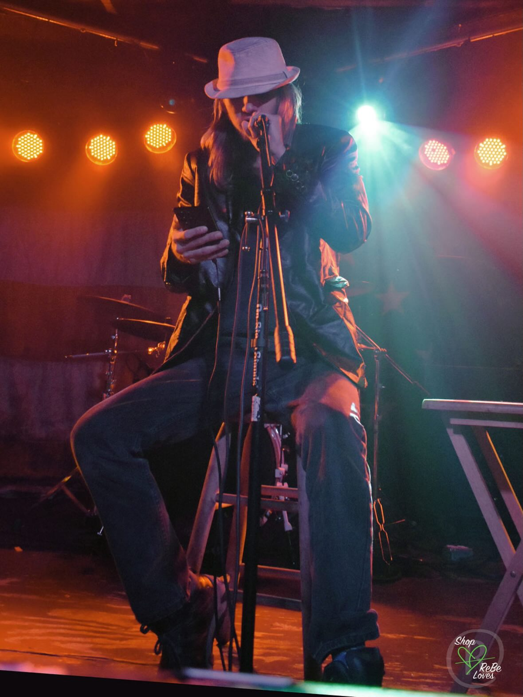
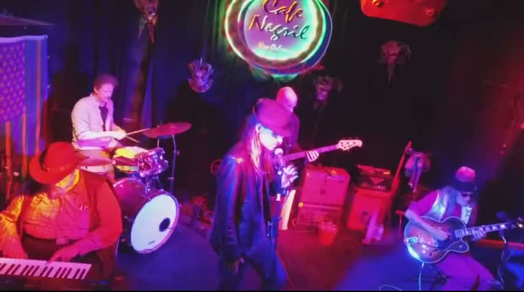
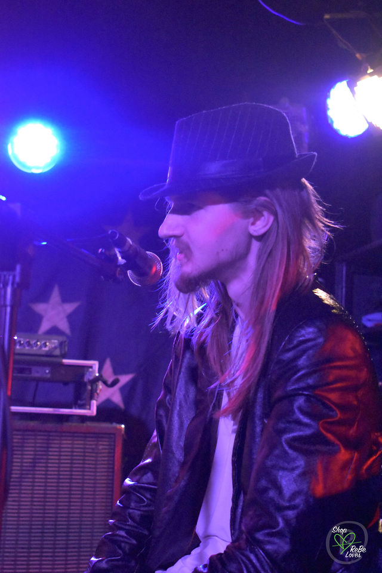
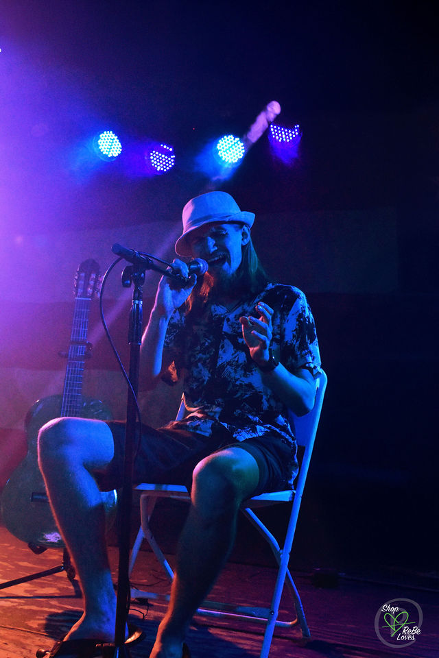

Press Kit
Overview & Live Clips

Birmingham, Alabama
John Polar
Just a guy making sense of the madness through the music.
Based in Birmingham, Alabama. Soulful, expressive, jazzy, and funky sets built around live vocals, guitar, and keys.
Regular Monday Bandstand open mics at The Nick, songwriter nights around Birmingham, and a guest vocal set at Café Negril in New Orleans with John Lisi & Delta Funk. The hat marks the shift into the music.
Stages & History
Where the sets happen
75+ Open Mics & Nights
Monday Bandstand sets and songwriter nights across Birmingham (The Nick, True Story Brewing, Dave's Pub), Huntsville, and New Orleans (Café Negril).
Live in the Room
Unscripted guest vocal sets with house bands, acoustic guitar and keys, and flowing multi-part live sets with no backing tracks.
Live Audio Archive
12 mastered live stage cuts and multi-perspective recordings archived on PolaRecords.
Live Performance Clips
Unvarnished live stage recordingsAudio Highlights
Full 12-track vault →Press Photography
Credit: ReBe Loves (@through_rebeseyes)


Booking & Press Inquiries
Direct Booking & Collaborations
Open to club dates, songwriter nights, and guest vocal sets. Reach out by email.